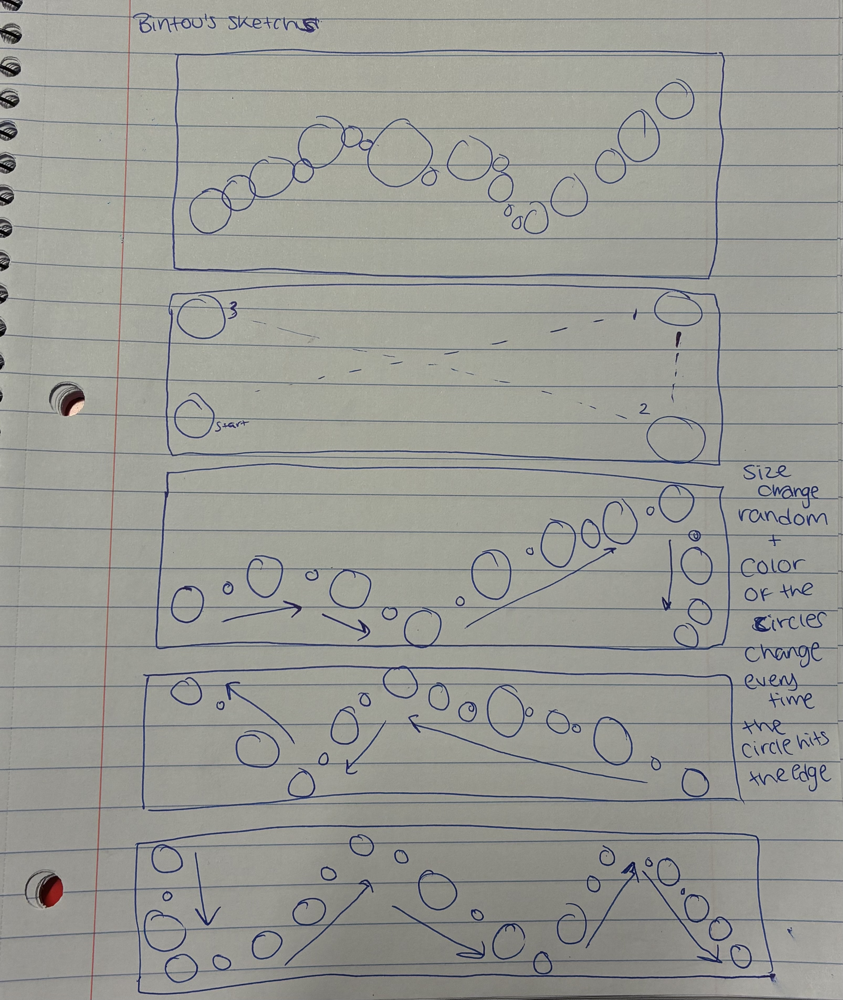

Attempt to replicate the moving DvD logo animation with a twist.
The cirles represents the DvD logo but as the circles are moving across the screen they change size
and everytime the circle hits the edge of the screen, it changes color.
Bugs: the circle only changes size when it hits the edge and after a while when it hits the x axis,
the circle rapidly changes color and slides straight down to the y- axis and restarts the resizing or it stays sliding up and down the x axis..
